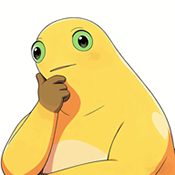
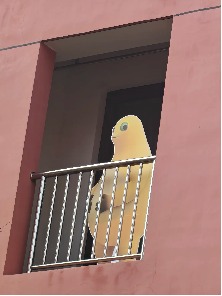
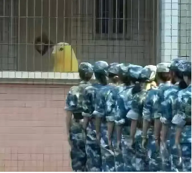
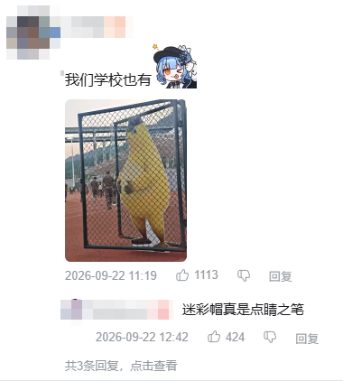
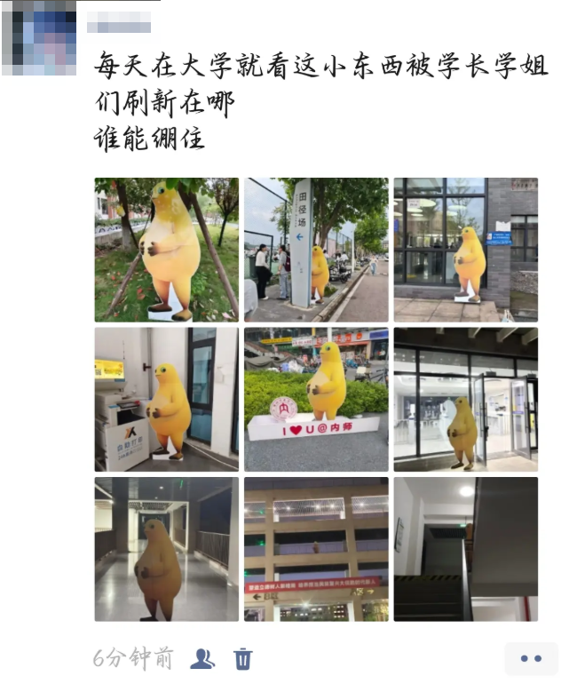

学校概况
1957 年建校（与内蒙古大学同年，但校区在一片荷叶上），吉祥物是一只只会捧腹大笑的黄色生物。
🐸 什么叫奶蛙
奶蛙不属于任何一部作品。它最初是网友拿动画角色「奶龙」做 AI 二创时，模型把身体渲染畸变、 腹部膨大、四肢变细，意外长出了一副青蛙相，于是得名「奶蛙」。 它没有官方设定，也没有出品方，所以不属于任何人——也因此属于所有人。 后来它和牛来、美团袋鼠一起，被网友并称「黄色三幻神」。
📍 校区地址
北疆草原湿地校区（荷叶湖 3 号荷叶），邮编 010021（与内蒙古大学同城同邮编，纯属巧合）。 校区分三期建设：一期一片荷叶，二期两片荷叶，三期——还在下雨，等水位。 校内交通靠走，校际交通靠被搬。
流动奶蛙
本校最著名的校园现象：它今天在阳台，明天在操场，后天在绿化带。
它是怎么在校园里流动起来的
秘密藏在立牌背面。最初是手写的通知，把立牌称作「流动奶龙」，告诉发现者可以把它搬到校园的其他位置； 后来手写升级成打印版的小贴士，还叠上了规范提示—— 「请勿放置于教学区域、宿舍楼内部、消防通道等影响正常秩序或安全的位置」。
于是搬运变成了一场接力：发现、搬走、拍照、发帖，梗从线上回到线下，再反哺回线上。 按照本校校史记载，这套机制已经让奶蛙在近百所高校里留下了目击报告。
🚩 军训附加难度
挑战和奶蛙对视不笑。它一字嘴，你绷不住；它捧腹大笑，你还是绷不住。
🧭 刷新位置
宿舍阳台、军训操场、绿化带、图书馆外、楼梯间——位置随机，规律是没有规律。
🐂 老前辈
四川农业大学的「搬牛」传统已持续近 20 年。牛是川农的，奶蛙是大家的。
奶蛙图鉴
黄色梨形身体、乳白肚皮、绿色大眼睛、一字嘴。全部表情里，最经典的是那个笑。

立牌打卡
本校“校友”在全国高校的目击记录（图片来自公开报道）。




校园生活
课表里最重要的一门是憋笑。
🍽 食堂
招牌菜：蚊虫小炒。二楼供应奶白浓汤（成分保密，本校食堂其实不存在）。
🏊 体育
必修课《蛙泳》与《对视 30 秒不笑》，后者挂科率 100%。
🎓 毕业
毕业要求：在立牌前拍一张照，并成功憋住不笑。至今无人达成。
💼 就业
主要去向：阳台、操场、绿化带、楼梯间，以及别人的表情包收藏夹。
🎼 校歌《奶蛙之歌》（节选）
📣 招生简章（摘要）
· 招生对象：蝌蚪及已完成变态发育者
· 考试科目：憋笑（100 分）、搬立牌（100 分）、找到它（必考）
· 学费：每天 3 只蚊虫，支持「分期付款、按顿结算」
· 奖学金：荷叶奖学金（覆盖一片荷叶的住宿费）
· 特别声明：本校无招生代码，以上内容仅供娱乐。
📖 校史春秋（虚构版）
- 1957 年：一场大雨后，第一只奶蛙出现在荷叶上，本校宣告成立。
- 2024 年：它在一次 AI 渲染事故里诞生，腹部膨大、四肢变细，从此有了名字。
- 2026 年：它被做成立牌，开始在全国高校里被搬来搬去，「流动奶蛙」正式成军。
- 同年：它与牛来、美团袋鼠并称「黄色三幻神」，成为年度最醒目的黄色符号。
- 今天：它就在你学校某个你意想不到的位置，并且一直在笑。
本站与真·内蒙古大学
「内蒙古奶蛙大学」是网友的玩笑，但内蒙古大学是真实存在的国家「双一流」建设高校， 位于内蒙古呼和浩特市，1957 年建校。想了解真正的大学，请看这里：
👉 点击进入内蒙古奶蛙大学（内蒙古大学）关于本站
本站是娱乐性质的虚构网页作品。「内蒙古奶蛙大学」为杜撰校名，不是真实院校，也不代表内蒙古大学的任何立场或信息， 页面的校史、招生、院系与数据均为玩笑内容。页面中指向 imu.edu.cn 的链接均为内蒙古大学真实官方网站。
图片来源：奶蛙表情图来自公开网络；校园立牌照片来自游戏媒体《流动奶蛙，大学最好的招生简章》相关公开报道。 本站为非商业性的玩梗与学习作品。校徽为本站原创内联 SVG。